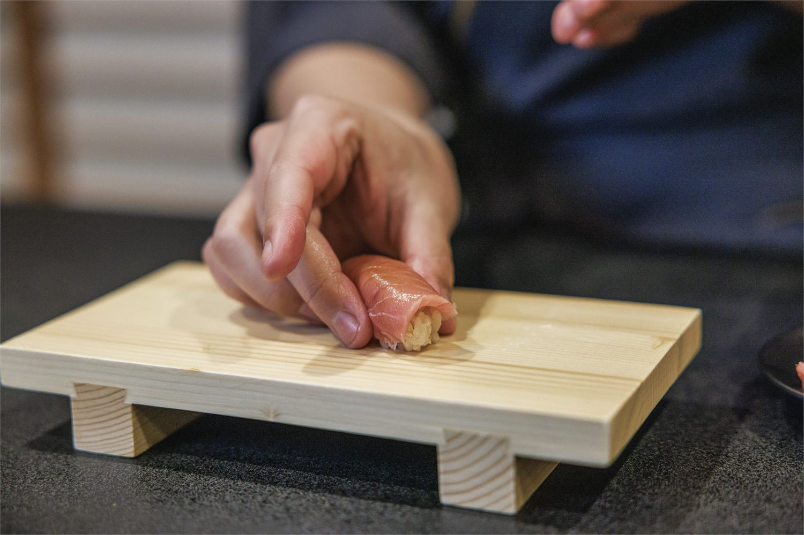

少人数制・リクエスト開催
名刺交換よりも、
鮨を握れ。
鮨は料理じゃなくて、
人との出会い方を変える道具だと思っています。
経営者・個人事業主のための、3時間の実践講座です。
2〜4名でのリクエスト開催を受け付けています。希望時期・人数を送っていただいた後、日程を個別に調整します。
Why sushi
なぜ、経営者・個人事業主が鮨を握るのか
経営者のまわりには、いつも人がいます。
交流会に出れば名刺は増えるし、会食の予定も埋まっている。
でも正直なところ、その多くは肩書きと用件で集まっている人たちです。
名刺入れの中に、会ったはずの人の名刺だけが増えていく。
その先に、関係は残っているでしょうか。
どれだけ良いサービスでも、まず興味を持ってもらえなければ届きません。
そして、最後に選ばれる理由は、サービス内容だけではなく「この人から買いたい」と思われること。
その人らしさは、説明ではなく体験で伝わります。
鮨は、その入口になります。


Communication
鮨は、最強のコミュニケーションツールである
鮨会をずっと続けてきて、毎回のように起きることがあります。
さっきまで仕事の話をしていた人が、目の前で握った一貫を口に入れた瞬間、ふっと素の顔に戻るんです。
そこから出てくるのは、肩書きの話じゃない。その人自身の話です。
僕が鮨を握り続けている理由は、正直これに尽きます。
この講座では、その時間を、自分の手でつくれるようになります。
鮨には、会話が生まれる流れがあります。
手元を見る。握る。渡す。食べる。感想を交わす。
名刺交換では生まれにくい間が、一貫の鮨を通じて自然に生まれます。肩書きではなく、人柄が伝わる。説明ではなく、ふるまいが伝わる。だから鮨は、経営者や個人事業主にとって強いコミュニケーションツールになります。
You will learn
この講座で身につくこと
この講座で学ぶのは、プロの技術ではありません。人に鮨をふるまえる基礎です。
握りの基本
シャリの扱い方、ネタの置き方、力の入れ方など、はじめての方でも実践しやすい順番で学びます。
人に出す所作
握るだけで終わらせず、目の前の人に一貫を出すときの間合いやふるまいまで扱います。
場のつくり方
家族、仲間、仕事相手にふるまうとき、会話が自然に生まれる場づくりを体験します。
Not professional training
プロを目指す講座ではありません
3時間でプロにはなれません。
この講座も、鮨職人養成講座ではありません。
目的は、完璧な握りを習得することではなく、人に鮨をふるまえる基礎を習得することです。
「鮨を握れる人」になるというより、「鮨を通じて、関係を深められる人」になる。その最初の一歩を体験します。
3 hours
3時間の流れ
- 鮨がコミュニケーションツールになる理由
- シャリ・ネタ・道具の基本
- 握りの実演「大将が背中を見せてくれたことで、"ああ、こういう風にできるんだ"って想像がついた」（受講者）
- 実際に握る練習
- 人にふるまう体験
- 質問・活用相談
Reason
なぜ、初心者でも3時間で握れるのか
一般的な鮨教室は、まず「返し」という手の動きから教えます。
実はこれが、初心者が一番つまずく順番なんです。
手の形に気を取られると、シャリを強く握りすぎる。硬くなって、食べたときに美味しくない。
僕は、逆から教えます。
シャリの握り方で、9割が決まる。だからそこから始めます。
手数は少なく、失敗しにくいやり方だけ。形になるし、ちゃんと美味しい。
握れないのは、あなたのセンスの問題じゃありません。
教わる順番が、ズレていただけです。
After lesson
受講後にできること
自分のサービスを説明する前に、自分という人に興味を持ってもらう。
取引先の皆様を自宅に招いて鮨をふるまう。
友人宅へ訪問して鮨をふるまう。
休みの日に家族にふるまう。
お店を予約してごちそうするのとは、相手の記憶への残り方が変わります。
自分のサービスを説明する前に、まず自分という人間に興味を持ってもらう。
その入口を、自分の手でつくれるようになります。
Voice
受講された方の声
実際に講座を受けた方の声を、動画でご覧いただけます。3時間の講座で何を感じ、どんな変化があったのか。受講前の不安や、受講後の実感をそのままお話しいただいています。
復習用の動画もお渡しします
当日だけで終わらないように、復習用として動画をお渡しします。
家で復習するとき、「あれ、どうやるんだっけ？」となった場面で見返してください。
- シャリ酢や醤油等のレシピ
- 鮨の握り方（復習用）
- 切り付けの考え方
※動画はあくまで補助です。本質は当日の実技体験にあります。

Next
握れるようになったあと、場を持てる
握れるようになると、次に出てくるのは技術だけの悩みではありません。
どこでふるまうのか。
仕入れはどうするのか。
道具や器はどう揃えるのか。
一人で場を回せるのか。
ここでお役に立てるのは、もう一段先の「人が集まる場づくり」です。
北参道駅徒歩3分の場所、鮨をふるまうための道具や食器、必要に応じた当日のサポートまで用意できます。
取引先や友人、家族を招いて、自分が主役となって鮨をふるまう。
その場からご縁を広げていきたい方には、講座後に相談できる形を用意しています。
Philosophy
鮨まさやの考え方
鮨まさやが大切にしているのは、鮨を通じて分かち合い、ご縁を紡ぐことです。
鮨を、特別な料理として提供するだけでなく、人と人の関係を深めるおもてなしとして届ける。
この考え方は、著書『経営者こそ、鮨を握れ』にもつながっています。本で世界観を知ってから考えたい方は、そちらもご覧ください。

Profile
講師紹介：後藤 将哉
大学卒業後、大手消費財メーカーと外資系ベンチャーで営業からマーケティングまで経験。30代後半、未経験から鮨職人の道へ進み、修行3ヶ月で、8席の会員制の鮨屋の大将を任される。
著書『経営者こそ、鮨を握れ』では、偶然出会った鮨によって人生の流れが大きく変わった経験を詳細に綴る。
現在はプロデューサーとして活動しながら、鮨を通じて人とご縁をつなぐ活動中。
Target
こんな方へ
向いている方
- 経営者・個人事業主の方
- 講座・体験・コミュニティを届けている方
- 人を紹介する機会が多い方
- 会食や交流の場を印象に残る時間にしたい方
- 自分の人柄や価値観を、体験として伝えたい方
合わない方
- プロの鮨職人修行を求める方
- 高級店の技術を完全再現したい方
- 料理スキルだけを学びたい方
- 短時間で完璧な握りを求める方
- 単なる話題づくりだけを求める方
Information
開催概要
| 開催日 | リクエスト制。日程は個別に調整します |
|---|---|
| 時間 | 18:30-21:30 |
| 所要時間 | 3時間 |
| 対象 | 経営者・個人事業主の方 |
| 形式 | 完全予約制・少人数制 |
| 開催人数 | 2〜4名 |
| 場所 | 北参道駅徒歩3分※詳細は確定後にご案内します |
| 参加費 | お一人55,000円（税込） ※1回あたり最低110,000円（税込）となります |
| 含まれるもの | 実技指導／食材／復習用動画（シャリ酢などのレシピ・握り方・切り付けの考え方） |
| 支払い方法 | 日程確定後にクレジットカード決済のご案内をお送りします |
| 持ち物 | 手ぶらでOK※鮨を握るのにエプロンが必要な方はご持参ください |
| キャンセルポリシー | 開催日確定後、開催2日前以降 50％ 前日以降 80% 当日キャンセル 100％ ※返金金額は決済手数料をひいた金額となります。 ※主催者都合で開催が中止となった場合、参加費は全額返金されます。 |
| 申込方法 | ページ内の「開催希望を送る」ボタンよりフォームへお進みください |
FAQ
よくあるご質問
初心者でも大丈夫ですか？
大丈夫です。プロの所作を完全に覚える講座ではなく、初めての方でも人に鮨をふるまえる基礎を体験できるように進めます。
料理が苦手でも参加できますか？
参加できます。難しい技術から入るのではなく、シャリの扱い方や力加減など、実践しやすい順番で体験します。
3時間で本当に握れるようになりますか？
はい。プロの握りじゃなくて、「人にふるまえる基礎」までを3時間で持ち帰ってもらいます。受講した方の言葉を借りると——「正直、握るのはハードルが高いと思っていた。でも、ポイントさえつかめば、難しくなく握れる」。
仕事の場でどう活用できますか？
会食、紹介、コミュニティイベント、少人数の集まりなどで、記憶に残る体験をつくるきっかけになります。
一人でも相談できますか？
通常開催は2〜4名で受け付けています。お一人での受講を希望される場合は、フォームの相談事項にご記入ください。
持ち物はありますか？
手ぶらでお越しいただけます。鮨を握る際にエプロンが必要な方はご持参ください。
支払い方法はどうなりますか？
日程と開催可否が確定した後、クレジットカード決済のご案内をお送りします。
キャンセルポリシーはありますか？
開催日確定後、開催2日前以降は参加費の50％、前日以降は80%、当日キャンセルは100％を申し受けます。返金金額は決済手数料をひいた金額となります。主催者都合で開催が中止となった場合、参加費は全額返金されます。
アレルギー対応はできますか？
内容によって対応可否が変わるため、開催希望フォームにご記入ください。
名刺ではなく、
記憶に残る一貫を。
鮨を握ることは、特別な人だけの技術ではありません。目の前の人とご縁を深めるための、新しい“おもてなし”です。
自分のサービスを説明する前に、自分という人に興味を持ってもらう入口をつくる。
2〜4名でのリクエスト開催を受け付けています。希望時期・人数を送っていただいた後、開催可否と詳細をご連絡します。